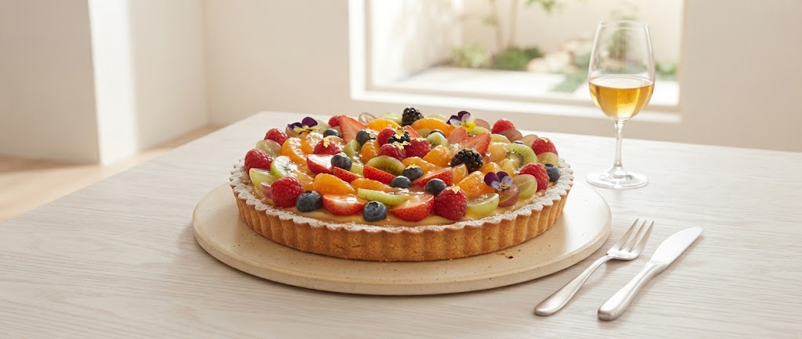

Our Philosophy
フランスの技術、寒河江の心。

「ミシュランの星は、過去の栄光。今の私にあるのは、目の前のお客様を笑顔にする一皿だけです。」
1990年、フランス二つ星のキャリアを背負いこの地へ。30年以上、地元食材と対話し、一軒家というプライベートな空間で「本物」を提供し続けてきました。
Official Booking & Information
Restaurant TAKANOの代名詞ともいえる「かぼちゃのポタージュ」。
地元・寒河江の農家が手塩にかけて育てた完熟かぼちゃのみを使用。
ミシュラン二つ星レストランで培った伝統的な技法により、素材本来の甘みを極限まで凝縮させました。
Our Philosophy
「ミシュランの星は、過去の栄光。今の私にあるのは、目の前のお客様を笑顔にする一皿だけです。」
1990年、フランス二つ星のキャリアを背負いこの地へ。30年以上、地元食材と対話し、一軒家というプライベートな空間で「本物」を提供し続けてきました。
Special Experience
一軒家ならではの落ち着いたリビング。お子様連れでも安心してお過ごしいただける個室をご用意しております。
コースの最後を飾るのは、目の前で選ぶ宝石のようなスイーツ。数種類のケーキやブリュレから、お好きなだけ。
ランチでも愉しめる4種のペアリングセット。料理に寄り添い、香りを引き立てる最高の一杯をご提案します。

New Project / Takeout & Specialty
Restaurant TAKANO宝属パティシエの確かな技術と、寒河江が誇る四季折々の芳かな果物(さくらんぼ、ぶどう、桃、りんごなど)が出逢いました。
店内で愉しむコースの余韻をご自宅でも、大切な方への贈り物としてもお愉しみいただける「特製フルームタルト」のテイクアウト販売を新たに開始いたします。
寒河江の契約農家から朝摘みで直送される、最高品質の果物をふんだんに使用。
ご自宅用はもちろん、記念日や特別な日の手土産としても喜ばれる特製BOX。
「心が贅沢になって帰ってきました。丁寧なおもてなしと、一皿ごとの驚き。また必ず伺います。」
— Guest Voice / Dinner
「食材の良さが、見た目の美しさに負けていない。
本格的なのにアットホームな、最高のリラックスです。」
— Guest Voice / Lunch
Restaurant TAKANO
〒991-0049 山形県寒河江市本楯3丁目130-1
寒河江駅より徒歩圏内・駐車場完備
Business Hours
ランチ・ディナー共に完全予約制
定休日:毎週木曜日
Contact
0237-86-0804
Restaurant TAKANOでは、最高のお料理を
最適な状態でお愉しみいただくため、
完全予約制とさせていただいております。
Est. 1990 Sagaae